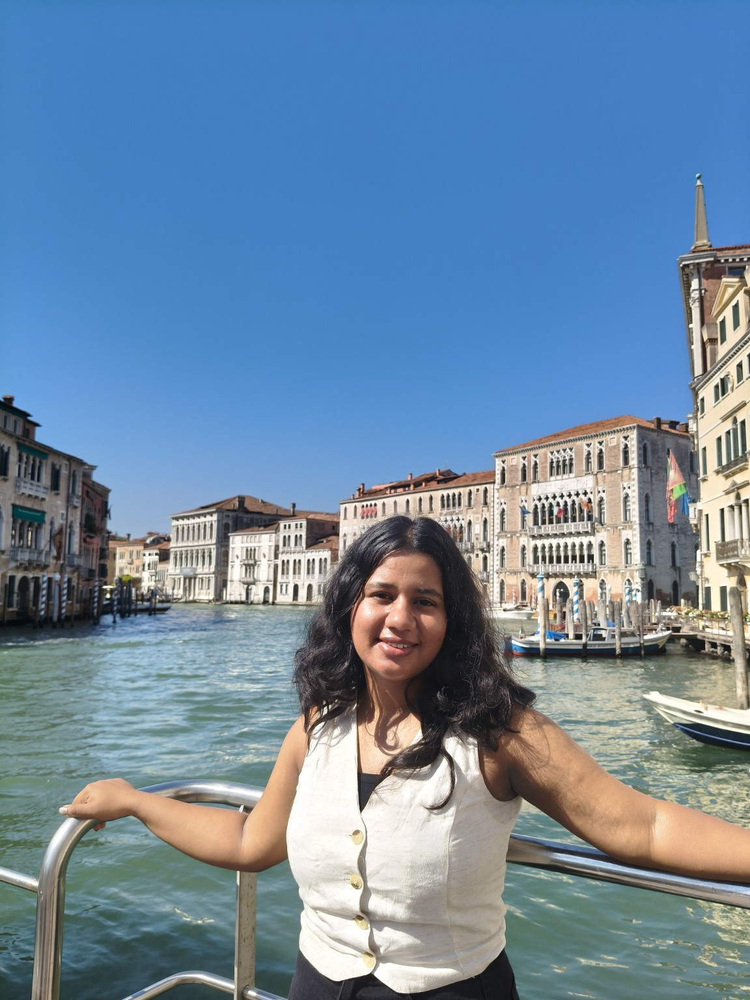
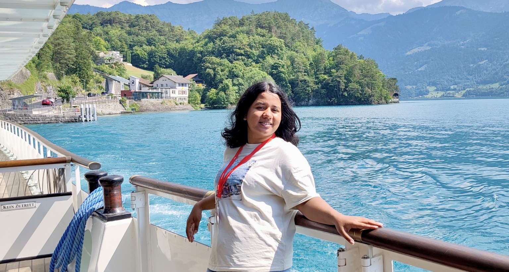

Indian Institute of Science Education and Research (IISER) Kolkata
2022–2027 (Expected)Integrated Bachelor of Science–Master of Science (BS–MS) in Mathematics
Minor in Computer Science · Expected graduation: June 2027
BS–MS MATHEMATICS · IISER KOLKATA
I am a final-year integrated BS–MS student in Mathematics at the Indian Institute of Science Education and Research (IISER) Kolkata, with a minor in Computer Science.
My research interests lie broadly in machine learning, particularly in understanding the mathematical and statistical principles underlying learning algorithms and developing computational methods for complex data.
I am currently conducting my master's thesis research at the Idiap Research Institute, Switzerland, focusing on machine learning for speech and neurological analysis.
I am actively seeking PhD opportunities in machine learning and related fields for Fall 2027.

CURRENT RESEARCH
MASTER'S THESIS · IDIAP RESEARCH INSTITUTE
My master's research focuses on machine learning and computational approaches to speech analysis, particularly in the context of neurological conditions. The work integrates statistical learning, speech signal processing, and computational experimentation to investigate patterns and variability in complex speech data.
The research involves developing and evaluating computational approaches to speech analysis, with an emphasis on methodological robustness and the statistical characterization of speech-related information.
Research experienceACADEMIC BACKGROUND
Integrated Bachelor of Science–Master of Science (BS–MS) in Mathematics
Minor in Computer Science · Expected graduation: June 2027
Higher Secondary (Class XII)
Central Board of Secondary Education (CBSE)
Secondary School (Class X)
TECHNICAL SKILLS
Neural networks, statistical learning, computational modeling
Statistical inference, causal inference, hypothesis testing, simulation-based methods
Time-series analysis, network analysis, numerical methods
Speech analysis, acoustic feature extraction, temporal data analysis

OUTSIDE OF WORK
Outside of work, I love travelling and exploring new places, meeting people from different backgrounds, and trying new experiences.
A little more about meLET'S START A CONVERSATION